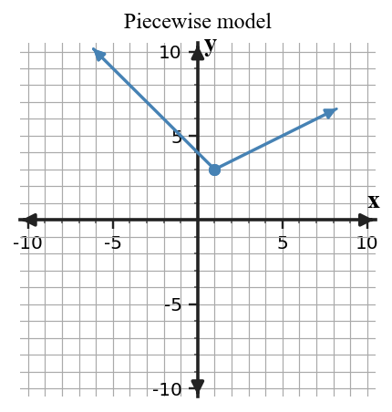

Design, revise, or synthesize a model. Use constraints and evidence to justify your choices.
Create an absolute value model for a delivery driver whose distance from a warehouse decreases to $0$ after $4$ hours and then increases at the same rate. Choose a reasonable constant speed, then include an equation, domain, and interpretation of the vertex.
Design, revise, or synthesize a model. Use constraints and evidence to justify your choices.
Create an absolute value model for a runner who reaches a checkpoint after $3$ hours and then moves away at the same speed. Choose a reasonable constant speed, then include an equation, domain, and interpretation of the vertex.
Design, revise, or synthesize a model. Use constraints and evidence to justify your choices.
Create an absolute value model for a drone that reaches its landing pad after $5$ seconds and then moves away at the same speed. Choose a reasonable constant speed, then include an equation, domain, and interpretation of the vertex.
Design, revise, or synthesize a model. Use constraints and evidence to justify your choices.
Create an absolute value model for a cyclist who reaches a trail marker after $6$ minutes and returns along the same route at the same speed. Choose a reasonable constant speed, then include an equation, domain, and interpretation of the vertex.
Design, revise, or synthesize a model. Use constraints and evidence to justify your choices.
Design a two-interval piecewise model for a gym membership that has one sign-up fee and then a different monthly rate after month $6$. Include a rule and explain the interval restrictions.
Design, revise, or synthesize a model. Use constraints and evidence to justify your choices.
Design a two-interval piecewise model for a delivery service with one rate before mile $4$ and a different rate after mile $4$. Include a rule and explain the interval restrictions.
Design, revise, or synthesize a model. Use constraints and evidence to justify your choices.
Synthesize the graph and a context: write a story that could match the piecewise graph, then identify where the rule changes and what each interval means.

Design, revise, or synthesize a model. Use constraints and evidence to justify your choices.
Revise this flawed model: a student used $d(t)=|t-5|$ for a cyclist who rides toward home at $3$ miles per hour and then away at $1$ mile per hour. Explain why symmetry fails and write a better piecewise rule.